Eğlenceye daha da yer açın.
Şimdi A16 çiple süper hız. Öncekinden iki kat fazla, en az 128 GB depolama alanı. Yasal açıklama dipnotuna bakın Renkli tam ekran tasarımıyla 11 inç Liquid Retina ekran. Yasal açıklama dipnotuna bakın Magic Keyboard Folio, Apple Pencil (USB‑C) ve Apple Pencil (1. nesil) desteği.
Dört çarpıcı renk
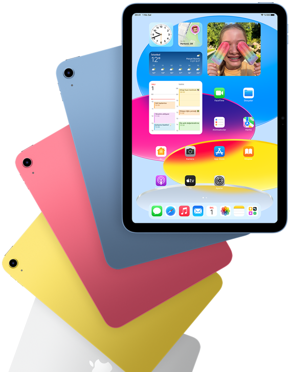
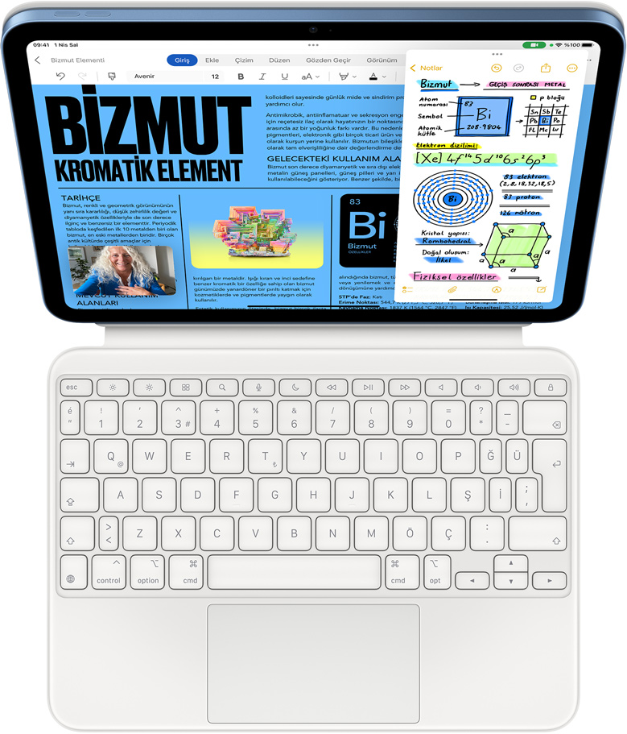
İşleri bir çırpıda halledin.
Süper hızlı A16 çip ile tek bir aygıtta çalışmak ve işlerinizi halletmek her zamankinden daha kolay. Not alın, iş birliği yapın ve farklı uygulamalarda aynı anda kusursuz bir şekilde çalışın. Pasta grafiklerden pasta tariflerine kadar, üretkenlik neredeyse iPad orada.
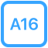
12 MP Geniş arka kamera
Kalbinizden geçenleri hayata geçirin.
Apple Pencil ile etkileyici bir ekranda kendinizi ifade etmenin, çizim ve beyin fırtınası yapmanın keyfini çıkarın. iPad ile dilediğinizi çekin, düzenleyin ve paylaşın. Yüksek kaliteli yerleşik mikrofonlar ve yatay modda stereo ses sunan hoparlörlerle ses projeleri oluşturun.
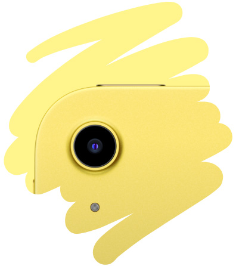
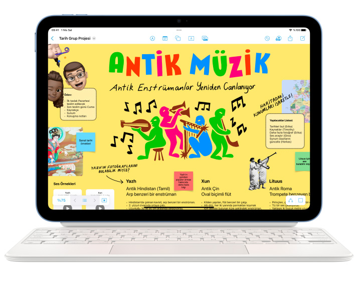
Apple Pencil ile not alın, çizim ve resim yapın. Magic Keyboard Folio’nun çok yönlü iki parçalı tasarımıyla rahatça yazın, trackpad’i kullanın ve sevdiğiniz içeriklerin keyfini çıkarın.2 İster tanıdık klavye kestirmelerini isterseniz herhangi bir yerine tıklanabilen trackpad’i kullanın. Ve harika bir yazma deneyimiyle tanışın.

Aradığınız her şeyi size bir arada sunan iPadOS, iPad’de kusursuz ve kolay bir kullanım deneyimi sağlıyor. Akıllı Yazı özelliği, el yazısıyla aldığınız notları daha akıcı, esnek ve okunaklı hale getiriyor. Ve Matematik Notları ile karmaşık denklemleri Apple Pencil kullanarak çözebiliyorsunuz.
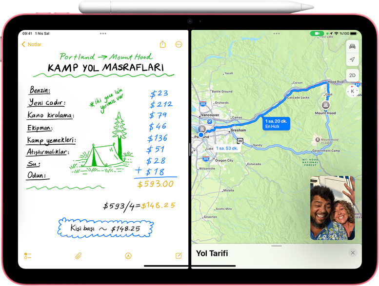
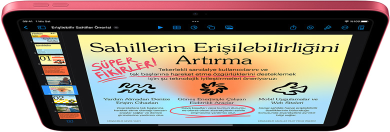
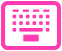
Hesap tablolarını düzenleyin, Keynote sunumlarını elden geçirin ve muhteşem notlar alın. Magic Keyboard Folio konforlu bir klavye deneyiminin yanı sıra hassasiyet gerektiren işlere uygun bir trackpad de sunuyor.
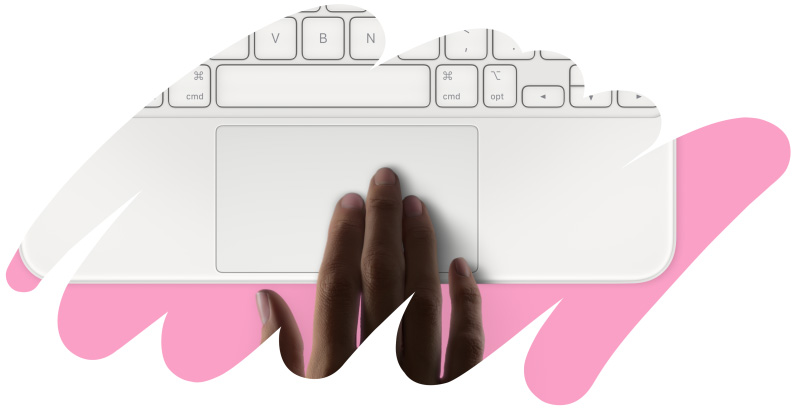
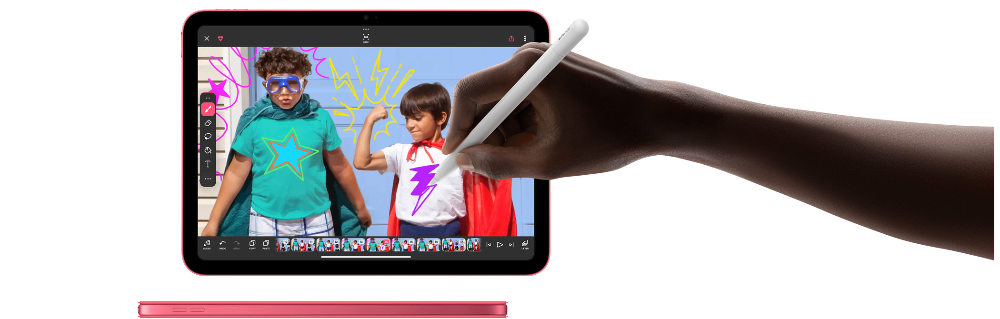
İçinizden geldiği kadar içerik yaratın.
Kendinizi ifade etmek, çizimler ve beyin fırtınaları yapmak için elinizin altında esnek ve yaratıcı bir güç merkezi var. Etkileyici 11 inç Liquid Retina ekran size inanılmaz bir tuval sunuyor. Bu tuvalde Apple Pencil ile istediğinizi çizebiliyor, not alabiliyor, belgeleri işaretleyebiliyor ve çok daha fazlasını yapabiliyorsunuz.
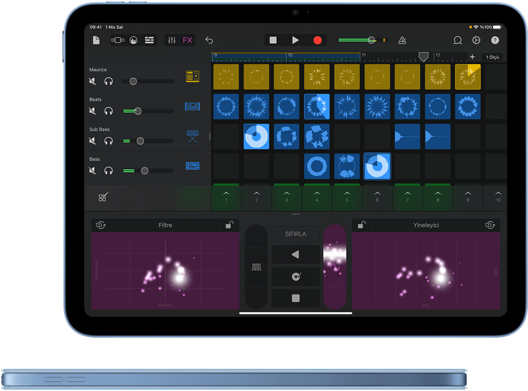
Yüksek kaliteli yerleşik mikrofonlar ve yatay modda stereo ses sunan hoparlörler ile her yerde kayıt yapın ve sesleri düzenleyin. İster bir podcast başlatın ister bir ritim oluşturun veya film müziği yapın. Yaratıcı projelerinizdeki sesler muhteşem olacak.
Çekimlerinizi 12 MP Geniş arka kamera ile yapın. Fotoğraf rötuşlayın, video düzenleyin, belgeleri tarayıp işaretleyin. Görsel Araştır özelliğiyle fotoğraf ve videolarınızdaki nesneleri tespit edin. Hepsini iPad ile yapmanın kolaylığını keşfedin.
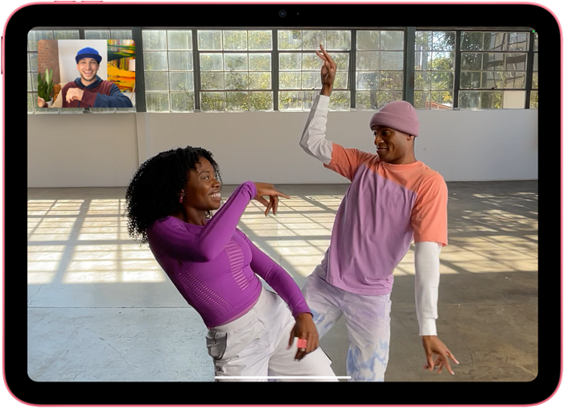
Hem kalplerinde olun hem de görüntünün merkezinde.
12MP Center Stage kamera ile FaceTime aramalarında, video konferanslarda veya selfie’lerde her zaman kadrajın içindesiniz. Üstelik Akıllı HDR 4 ile fotoğraflarınız daha da doğal ve göz alıcı.
12MP Center Stage kamera
Işık hızında hücresel bağlantı ve Wi‑Fi 6
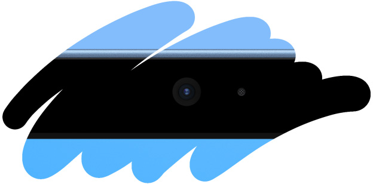
Işık hızında Wi-Fi ile bağlantıda kalın. Ayrıca Wi Fi + Cellular modellerinin hücresel bağlantı özellikleriyle ihtiyacınız olduğunda esnek bir veri tarifesi ekleyerek internette gezinin, oyun oynayın, online film izleyin ve çok daha fazlasını yapın.4
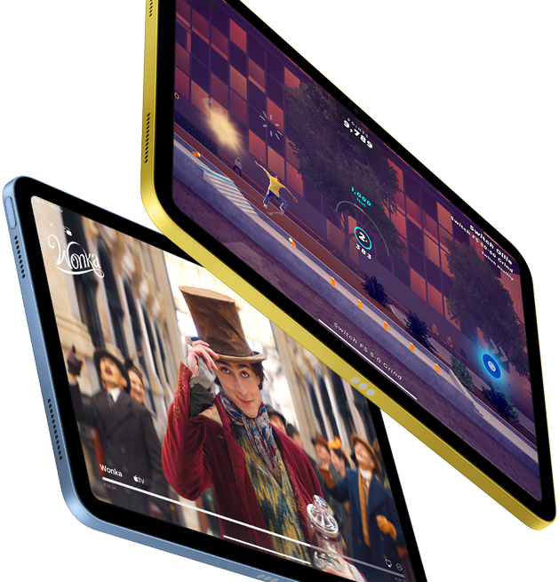
İzleyin. Öğrenin. Üst seviyeye geçin.
Muhteşem bir ekranda online film izleyin, profesyonellerden öğrenin ve çok oyunculu oyunlar oynayın. Etkileyici AR dünyasının derinliklerine dalın. Göz alıcı 11 inç Liquid Retina ekran ile en sevdiğiniz dizi ve filmlerin tadını ister evinizde ister seyahat ederken çıkarın.1 Ve True Tone teknolojisiyle her ışıkta rahat bir görüntüleme deneyimi yaşayın.
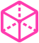
Etkileyici AR deneyimleriyle derslerinizi yeni bir seviyeye taşıyın. Evreni keşfedin, müzelerin içinde dolaşın ve harika uygulamalarla merak ettiğiniz daha pek çok şeyi öğrenin.
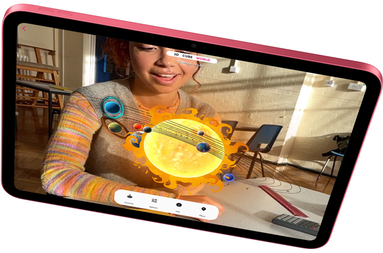
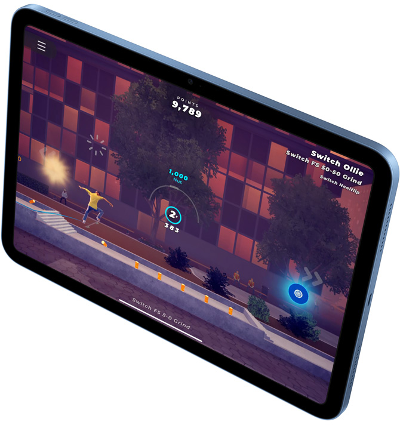
Oyun Modu özelliğiyle yoğun grafiklere sahip oyunları daha tutarlı kare hızlarında oynayın. SharePlay ile arkadaşlarınızı oyuna katılmaya ya da sizi oynarken izlemeye davet edin. Ve dilerseniz favori oyun kumandanızı iPad ile eşleştirin.
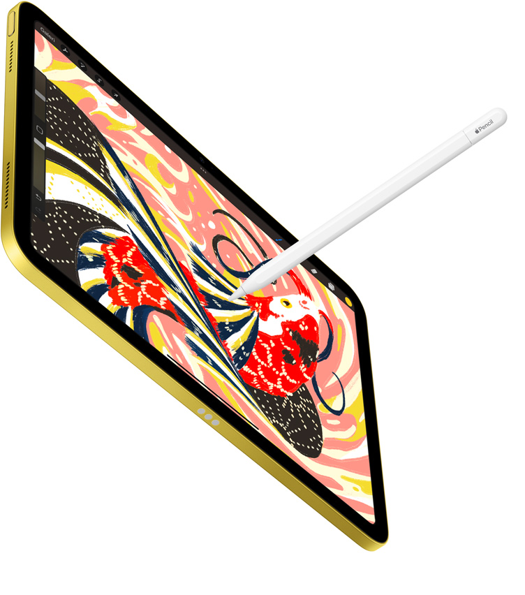
Apple Pencil not almak, günlük tutmak, çeşitli çizim ve illüstrasyonlar yapmak için harika bir aygıt. Mükemmel piksel hassasiyetine ve düşük gecikme süresine sahip. Kısacası Apple Pencil, kalem kullanmak kadar doğal bir his veriyor.
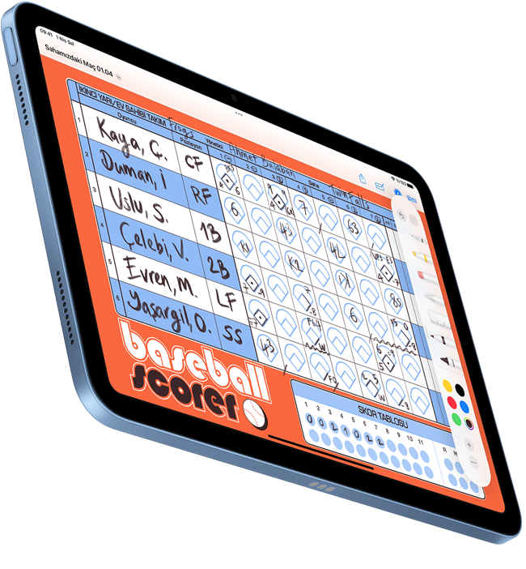
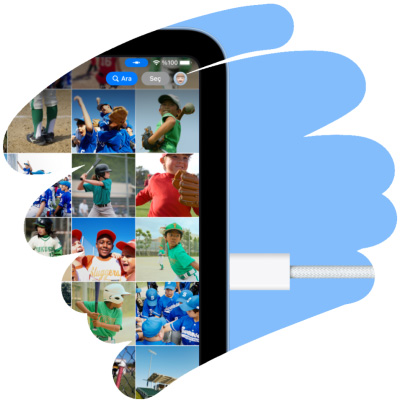
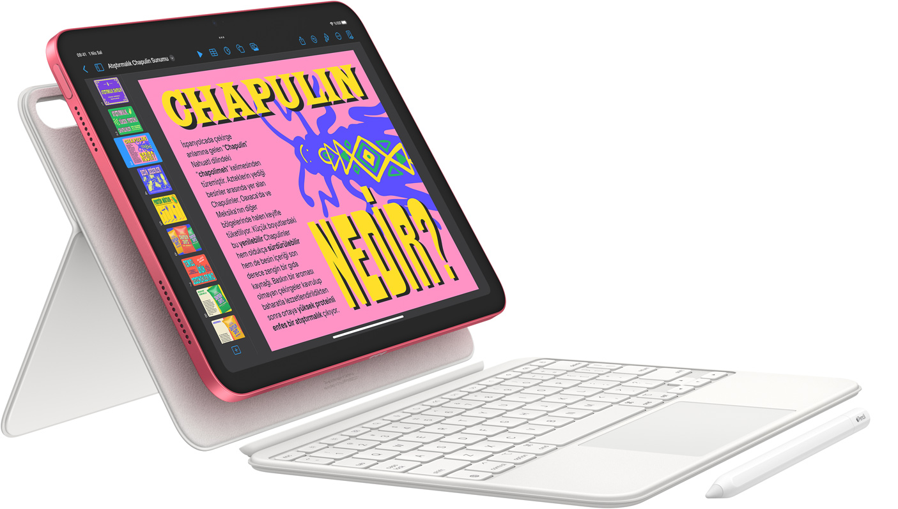
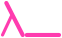
Magic Keyboard Folio, iPad için mükemmel bir yol arkadaşı. Hassas görevler için tasarlanmış yerleşik trackpad ve 14 tuşlu işlev tuşu sırası ile muhteşem bir yazma deneyimi sunuyor. Çok yönlü tasarımında manyetik olarak yapışan iki parça bulunuyor: çıkarılabilir bir klavye ve esnek görüntüleme imkanı sunan ayarlanabilir standa sahip koruyucu arka panel.
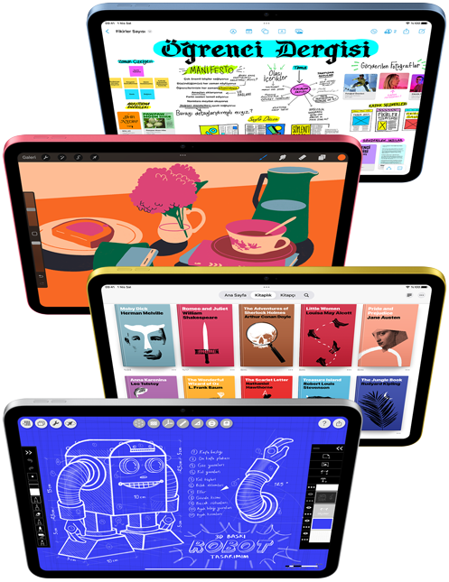
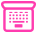
iPadOS ve yerleşik uygulamalar.Yasal açıklama dipnotuna bakın Ve çok daha fazlası var.
Mesajlar uygulamasında arkadaşlarınızla birlikte çalışın, ailenizle fotoğraf ve video paylaşın veya SharePlay’i kullanarak birlikte film izleyip oyun oynayın. Güçlü ve kullanımı kolay iPadOS, iPad’i çok yönlü hale getirecek şekilde tasarlandı. Muhteşem yerleşik uygulamalar, App Store’da iPad için geliştirilmiş 1 milyonun üzerinde uygulama ve daha fazlası.